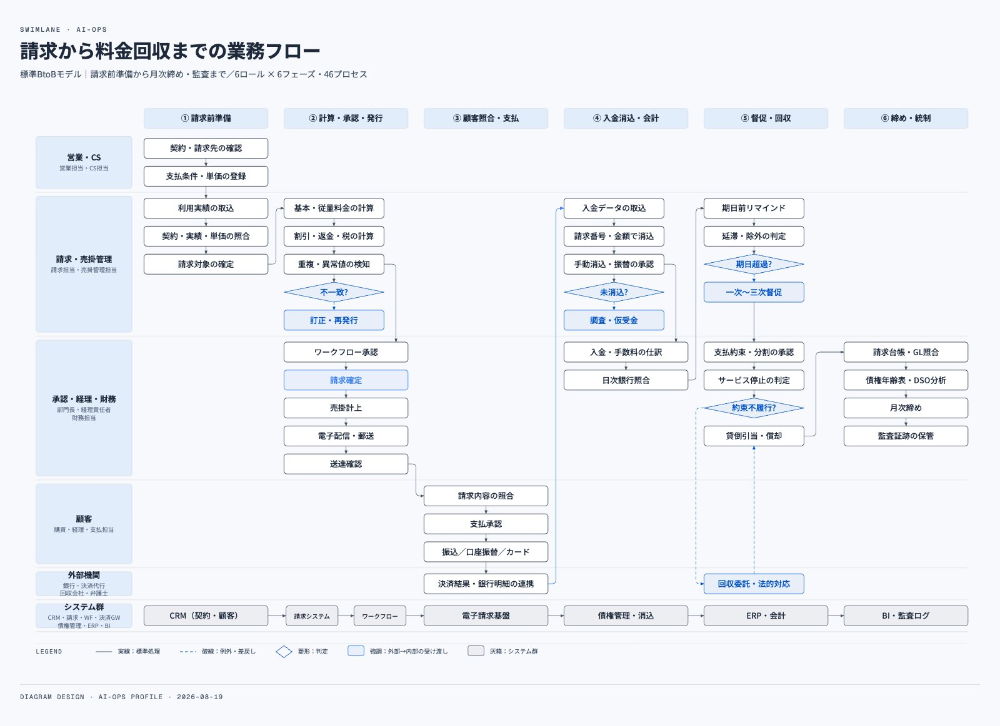

Case Study 06
46工程
1枚に収まる工程数
44本
工程をつなぐ矢印
6×6
部門×フェーズ
業務改善の相談を受けても、今どう回っているかを指し示す共通の絵がない。
手で描けば数日かかる。描き上がった頃には現場が変わっている。結果、どこに無駄があるかの議論が、人の記憶に依存する。
部門をレーン、時系列をフェーズに
業務の記述から、部門・工程・判断分岐・使用システムを抜き出す。レーンとフェーズに割り付ける。
座標計算と配置を自動化
1工程1担当の対応を構造で保証する。描き漏れや箱の重なりは機械検査が弾く。
ラベルを差し替えて横展開
同じ生成器で別の業務にも展開できる。相手がブラウザ上でドラッグして直せる版も、同じ構造から出せる。

架空の標準モデルです。特定の企業の業務ではありません。
見本を実寸で開く（別タブ） →1枚
46工程・44本の矢印が収まる
機械検査
描き漏れと箱の重なりを弾く
標準的なBtoBモデルの見本を1枚用意した。同じ構造から相手が直せる版も生成できるので、渡した後に相手の手で育つ。まず「今の回り方」を1枚にすると、どこから自動化すべきかが先に見える。
BEFORE
AFTER